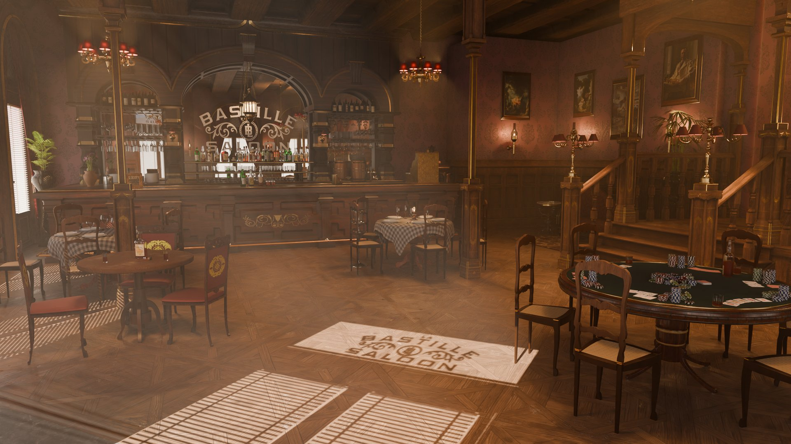

Featured Projects
Flagship 3D environments, real-time visual computing, and look development across Blender and Unreal Engine 5.
Blender
3D Art & LookDev3D Modeling, UV Unwrapping, PBR Materials, and Photorealistic Rendering in Cycles

La Bastille Saloon
Complete 3D interior environment of an authentic historical western saloon, modeled entirely in Blender. Features modular architecture, intricately detailed props (poker tables with cards and chips, weathered wooden bar counter, brass chandeliers, second-floor balconies, and staircases), realistic PBR materials, and advanced atmospheric Cycles lighting showcased across cinematic camera shots.
Unreal Engine 5
AAA Real-Time & Virtual ProductionLumen Dynamic Global Illumination, Nanite Geometry, Digital Humans (MetaHuman), and Look Development
.png)
3D Scan & Mesh Sculpting
Photogrammetry & Base Mesh Cleanup
Single-camera 360° photogrammetry (160 photos) conformed in Blender. Scanned beard removal and topology clean-up using Clay Strips, Smooth, and Flatten sculpting brushes.
.png) Blender Sculpting
Blender Sculpting
.png) Ground Truth
Ground Truth
.png) 360° Point Cloud
360° Point Cloud
Scan to MetaHuman Identity
UE5 Identity Fitting & LookDev
Conversion of conformed mesh into UE5 MetaHuman Identity. Procedural multilayer SSS skin calibration, physical sclera/iris shaders, strand hair/beard grooms, and in-engine lighting.
Identity Fitting
.png) Subway Scene
Subway Scene
.png) SSS & Groom
SSS & Groom
Facial Mocap & Take Recorder
Live TrueDepth Performance Climax
Facial performance depicting an ascending emotional climax of anxiety and tension from a calm baseline. Streamed via iPhone TrueDepth (LiveLink Face) and recorded directly with UE Take Recorder.
.png) Phase 01: Neutral
Phase 01: Neutral
.png) Phase 02: Glances
Phase 02: Glances
.png) Phase 03: Strain
Phase 03: Strain
.png) Phase 04: Climax
Phase 04: Climax
Cinematic Environment — Japanese Sanctuary
A photorealistic real-time Japanese garden and cliffside sanctuary environment built and lit in Unreal Engine 5. Leverages Lumen dynamic global illumination for physical indirect light bouncing, Nanite virtualized micro-polygon geometry for sub-pixel asset fidelity, volumetric fog with piercing sun god rays, procedural water surface shaders with caustics and Screen-Space Reflections (SSR), and instanced wind-animated foliage running live at interactive frame rates.
Real-Time World Building & Technical Breakdown
Pagoda Overlook & Ridge
Nanite Geometry & Asian Architecture
Modular traditional East Asian wooden structures, hand-crafted roof tile geometry, and stone pagoda shrines perched over steep mountain cliffs. Optimized with Nanite geometry for smooth LOD transitions and sub-pixel micro-detail.
.png) Pagoda Overlook • Nanite
Pagoda Overlook • Nanite
Temple Courtyard & Zen Garden
Lumen Dynamic Global Illumination
Real-time multi-bounce indirect lighting powered by Lumen. Natural sunlight bounces off limestone steps, timber pavilions, and blooming cherry blossom foliage with physically calibrated exposure.
.png) Zen Courtyard • Lumen GI
Zen Courtyard • Lumen GI
Lakeside Pond & God Rays
Water Caustics & Volumetric Fog
Procedural aquatic shader featuring dynamic caustics, SSR reflections, and floating lily pads. Volumetric scattering generates cinematic god rays through the gorge, verified live at 44.43 FPS in-engine.
.png) Water & Caustics • 44.4 FPS
Water & Caustics • 44.4 FPS